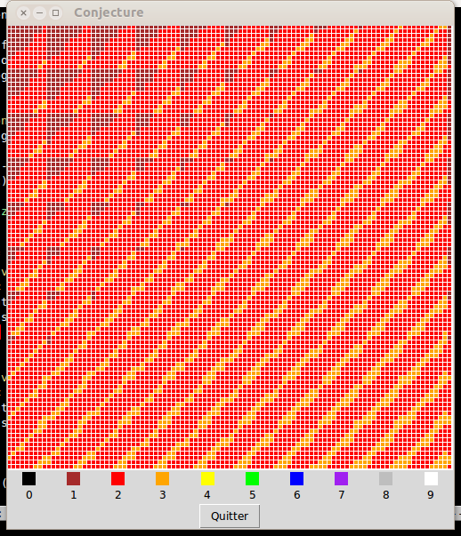

La conjecture
On considère la procédure suivante :
- Prenez un nombre entier naturel quelconque (par exemple, je prends 1966)
- s'il s'écrit avec 1 chiffre, on a déjà fini et on a réalisé 0 itération.
- sinon, faites le produit de ses chiffres : 1 x 9 x 6 x 6 = 324
- Itérez l'étape 2 sur ce nombre jusqu'à ce qu'il soit inférieur à 10 tout en comptant le nombre d'iétrations (ici, on fait 3 x 2 x 4 = 24 puis 4 x 2 = 8 et on s'arrête : 3 itérations).
Une conjecture énonce que quel que soit le nombre de départ, aussi grand que l'on veut, le nombre d'itérations effectué par cette procédure ne dépassera pas 11.
C'est tellement surprenant que l'on va y regarder de plus près et essayer de montrer que cette conjecture est fausse.
Dans ce qui suit, chaque fonction doit être testée et vous devez vous assurez qu'elle fonctionne correctement avant de passer à la suivante.
- Écrire une fonction python qui prend un nombre naturel en paramètre et renvoie le nombre d'itérations.
- Écrire une fonction python qui prend deux paramètres naturels, teste tous les nombres entre ces deux naturels et renvoie une liste composée des nombres ne vérifiant pas la conjecture (une liste vide si tous la vérifie).
- Écrire une fonction python qui prend deux paramètres naturels, teste tous les nombres entre ces deux naturels, réalise un histogramme des nombres d'itérations et le renvoie sous la forme d'une liste de 12 nombres (de 0 à 11 itérations).
(Si on a l'espoir de trouver un nombre qui ne vérifie pas la conjecture, on doit utiliser un treizième élément qui compte le nombre de nombres ne vérifiant pas la conjecture.)
Le test exhaustif de tous les nombres étant trop long, on va essayer d'avoir de la chance en utilisant le hasard :
- Écrire une fonction python qui prend deux paramètres n et m, qui réalise un histogramme des nombres d'itérations à partir de n naturels s'écrivant avec m chiffres et le renvoit.
Souvent, une représentation graphique apporte des éléments de compréhension, ou de nouveaux éléments de mystère. Qu'allons-nous trouver ici ?
On va associer une fenêtre graphique composée d'un simple canevas dans lequel on va dessiner. Supposons que le canevas fasse 100 pixels sur 100. On va représenter chaque nombre naturel par un carré de 5 pixels de côté, coloré en fonction du nombre d'itérations qui lui est associé. On dispose ces carrés/nombres en ligne, les uns après les autres ; une ligne correspond donc ici à 20 nombres. Avec un canevas de 100 x 100 pixels, on peut représenter 400 naturels consécutifs.
- Complétez votre programme avec cette représentation graphique. La taille de la fenêtre devra pouvoir facilement être modifiée, ainsi que les naturels représentés.
Après quelques efforts, vous pourriez obtenir des graphiques ressemblant à celui-ci :

Finalement, avez-vous réussi à montrer que cet énoncé est faux ?